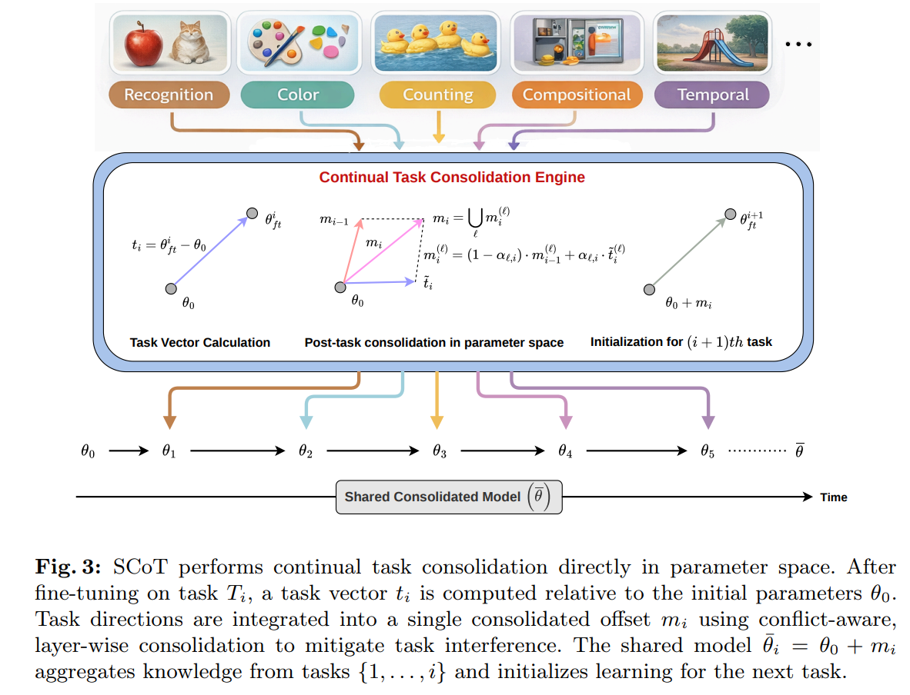
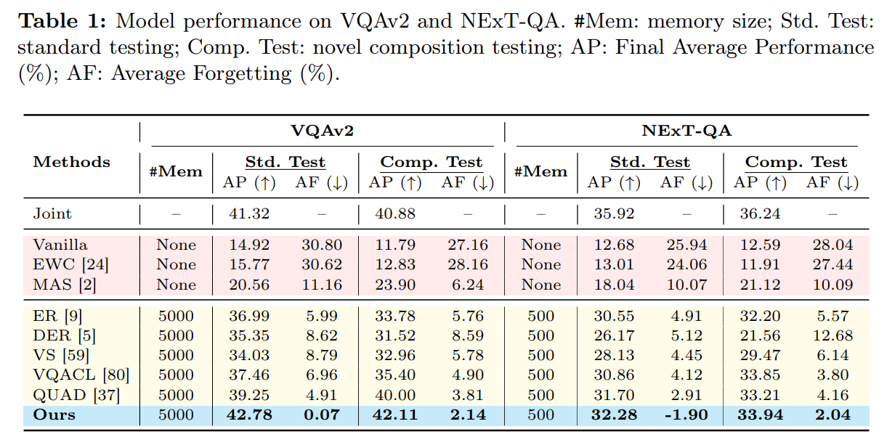
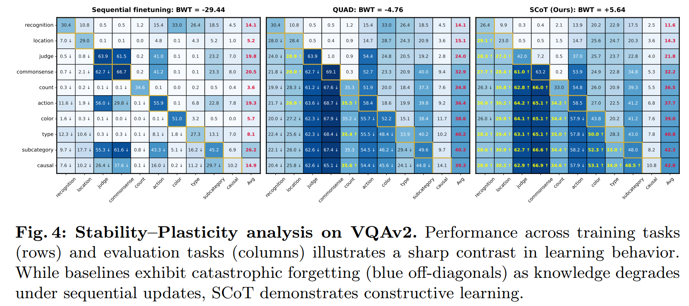

Continual learning in visual question answering (VQACL) requires a single vision–language model to acquire new multimodal reasoning skills from a task stream while retaining prior capabilities. However, naïve sequential finetuning suffers from catastrophic forgetting. Existing continual VQA methods primarily rely on replay or parameter regularization but largely overlook how task-specific updates accumulate and interact in parameter space, particularly whether successive updates are synergistic or conflicting across layers.To address this, we introduce SCoT (Similarity-guided Conflict-aware Task Consolidation), a continual learning framework that represents each task as a parameter update relative to a pretrained anchor model and integrates tasks through layer-wise parameter-space reasoning. For each layer, SCoT measures alignment between incoming and accumulated task vectors, removes only destructive components via conditional projection when conflicts arise, and adaptively modulates consolidation strength using similarity-guided weighting. This preserves beneficial transfer while suppressing harmful interference, enabling stable yet adaptive continual learning. Experiments on VQAv2 and NExT-QA demonstrate strong continual VQA performance, reducing forgetting to near-zero (0.07 and -1.90) while achieving rare positive backward transfer (+5.64 and +6.97), outperforming strong continual-learning and task-vector baselines.



@inproceedings{patel2026scot,
title = {SCoT: Similarity-guided Conflict-aware Task Consolidation for Continual VQA},
author = {Patel, Anand and Abdar, Moloud and Banerjee, Biplab},
booktitle = {European Conference on Computer Vision (ECCV)},
year = {2026}
}